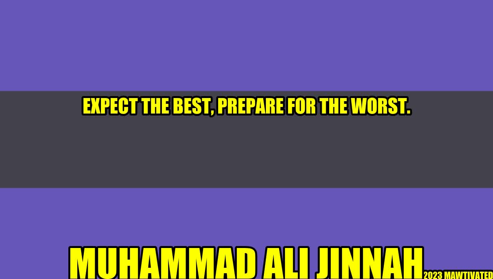

Expect the Best, Prepare for the Worst

An Inspiring Story
John, a successful entrepreneur, believed that everything in life could be controlled by hard work and determination. He built his business from scratch, worked long hours, and achieved tremendous success. However, one day, an unexpected turn of events changed his life forever.
John's business partner embezzled company funds and disappeared, leaving him with a pile of debt and no income. John felt devastated and lost as he tried to stay afloat. He regretted not having prepared for such an eventuality, as he always believed that everything in life could be controlled.
John soon realized that he needed to embrace the philosophy of expecting the best, preparing for the worst. He started taking proactive steps to protect his business and invested in risk management strategies. This helped him not only recover from the loss but also grow his business and establish it as a thriving enterprise.
Author Background - Muhammad Ali Jinnah
Muhammad Ali Jinnah was a visionary leader who played a vital role in the creation of Pakistan. He believed that a nation could succeed only if it prepared for the worst. His famous quote 'Expect the best, Prepare for the Worst' is a testament to his forward-thinking approach.
and Case Studies
Many people have realized the value of preparing for the uncertainties of life, and a lot of them have learned it the hard way.
- Ben, a financial analyst, lost his job when the company he worked for went bankrupt. He had saved enough money to get by for a few months, but when his savings dwindled, he found himself in a precarious situation. He realized that he should have invested his money in a diversified portfolio that would have protected him during hard times.
- Samantha, a fitness instructor, suffered a severe injury that left her unable to work for several months. She did not have any disability insurance, and her savings ran out quickly. She realized that she should have taken steps to protect her livelihood.
- Mike, a small business owner, faced a lawsuit that threatened to bankrupt his company. He had not invested in liability insurance, which could have saved him from financial ruin. He realized that he should have prepared for the worst-case scenario.
These stories are reminders that we cannot control every aspect of life, and preparing for the worst can help us mitigate the risks.
Examples
Here are some practical examples of how one can expect the best, prepare for the worst:
- Investing in insurance policies: Life insurance, health insurance, disability insurance, property insurance, and liability insurance are some of the critical insurance policies that one should invest in to protect their financial future.
- Saving money: Building an emergency fund is essential to weather any financial crisis.
- Diversifying investments: Investing in a diversified portfolio of stocks, bonds, and other asset classes can safeguard one's investments against market fluctuations.
- Learning new skills: Updating one's skills and knowledge can help one stay relevant in their profession, making them more employable and prepared for any eventuality.
- Forming supportive networks: Building a support system of friends, family, and colleagues can help one navigate through difficult times.
The title of this article is 'Expect the Best, Prepare for the Worst - How to Safeguard Your Financial Future.'
- We cannot control every aspect of life, and uncertainties can derail our plans.
- Expecting the best, preparing for the worst can mitigate risks and help us stay better prepared for any eventualities.
- Investing in insurance policies, saving money, diversifying investments, learning new skills, and building supportive networks are some of the effective measures one can take to safeguard their financial future.
Hashtags and SEO Keywords
Hashtags: #ExpectTheBest #PrepareForTheWorst #SafeguardYourFuture
SEO Keywords: Expect the best, Prepare for the worst, Muhammad Ali Jinnah, personal anecdotes, case studies, financial future, insurance policies, emergency fund, supportive networks.
Article Category
Category: Personal Finance
Curated by Team Akash.Mittal.Blog
Curated by Team Akash.Mittal.Blog
Share on Twitter Share on LinkedIn